GAMEPLAY PROGRAMMING
Dash Drive.
A three-lane endless runner through suburbs and city streets, with police pursuits that put every lane change to the test.
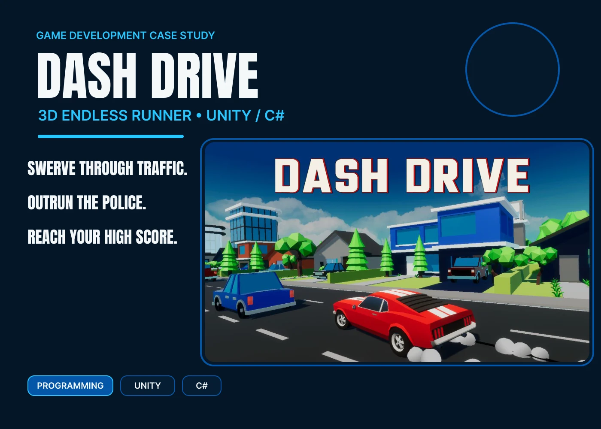
Cover
GAME DEVELOPMENT CASE STUDY DASH DRIVE 3D ENDLESS RUNNER • UNITY / C# SWERVE THROUGH TRAFFIC. OUTRUN THE POLICE. REACH YOUR HIGH SCORE. PROGRAMMING UNITY C#
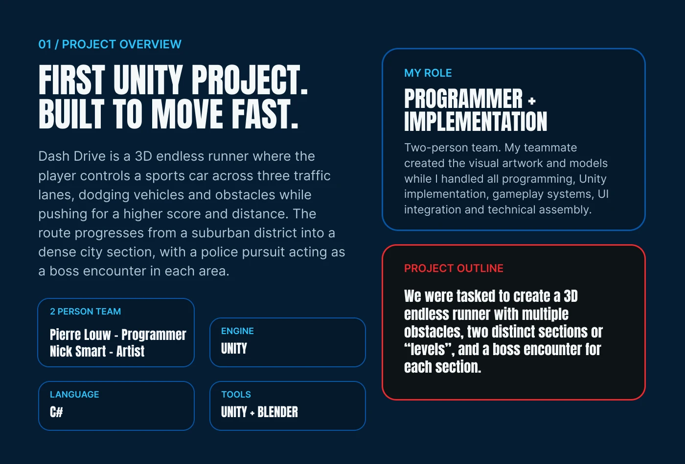
Project overview
01 / PROJECT OVERVIEW FIRST UNITY PROJECT. BUILT TO MOVE FAST. MY ROLE PROGRAMMER + IMPLEMENTATION Dash Drive is a 3D endless runner where the player controls a sports car across three traffic lanes, dodging vehicles and obstacles while pushing for a higher score and distance. The route progresses from a suburban district into a dense city section, with a police pursuit acting as a boss encounter in each area. Two-person team. My teammate created the visual artwork and models while I handled all programming, Unity implementation, gameplay systems, UI integration and technical assembly. PROJECT OUTLINE We were tasked to create a 3D endless runner with multiple obstacles, two distinct sections or “levels”, and a boss encounter for each section. 2 PERSON TEAM Pierre Louw - Programmer Nick Smart - Artist ENGINE UNITY LANGUAGE C# TOOLS UNITY + BLENDER
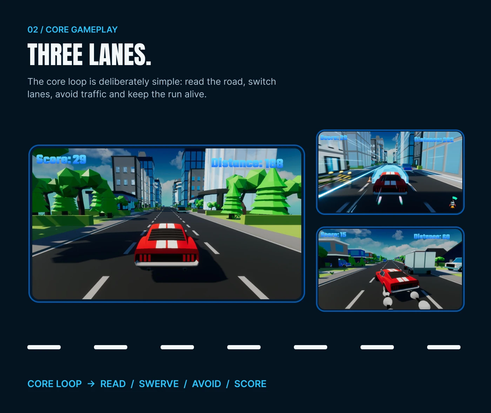
Core gameplay
02 / CORE GAMEPLAY THREE LANES. The core loop is deliberately simple: read the road, switch lanes, avoid traffic and keep the run alive. CORE LOOP → READ / SWERVE / AVOID / SCORE
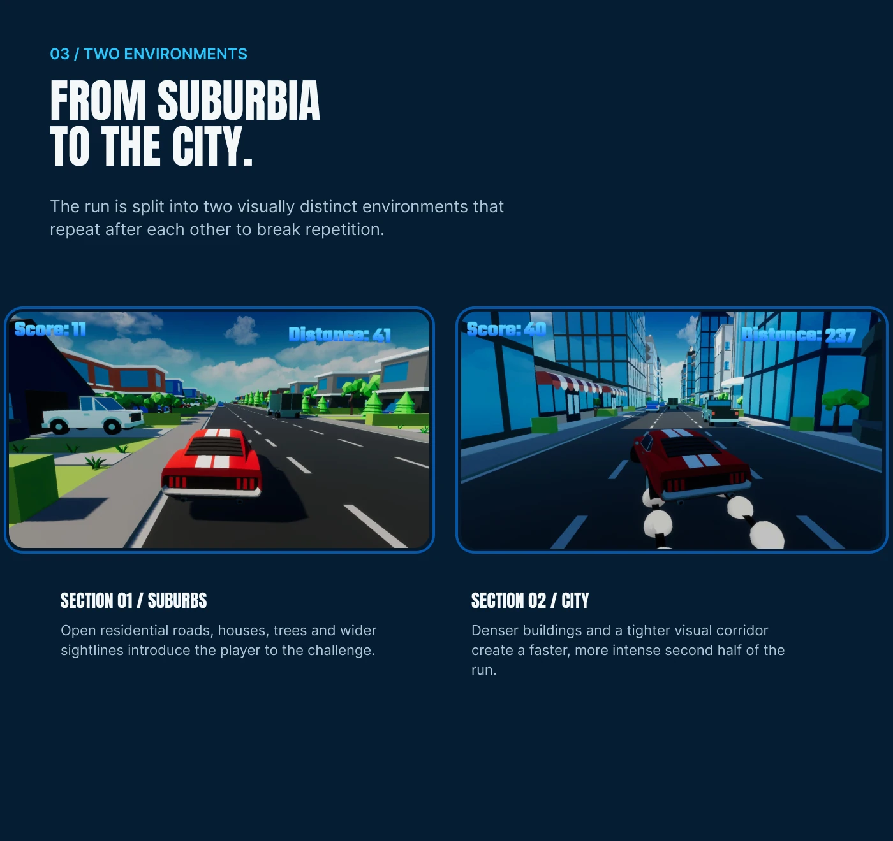
Two environments
03 / TWO ENVIRONMENTS FROM SUBURBIA TO THE CITY. The run is split into two visually distinct environments that repeat after each other to break repetition. SECTION 01 / SUBURBS Open residential roads, houses, trees and wider sightlines introduce the player to the challenge. SECTION 02 / CITY Denser buildings and a tighter visual corridor create a faster, more intense second half of the run.
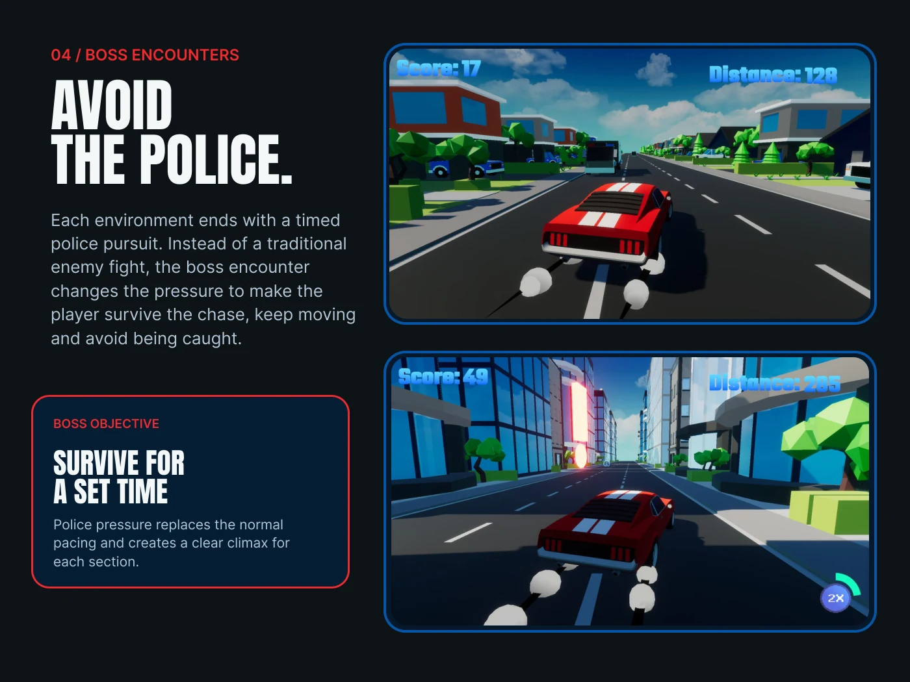
Boss encounters
04 / BOSS ENCOUNTERS AVOID THE POLICE. Each environment ends with a timed police pursuit. Instead of a traditional enemy fight, the boss encounter changes the pressure to make the player survive the chase, keep moving and avoid being caught. BOSS OBJECTIVE SURVIVE FOR A SET TIME Police pressure replaces the normal pacing and creates a clear climax for each section.
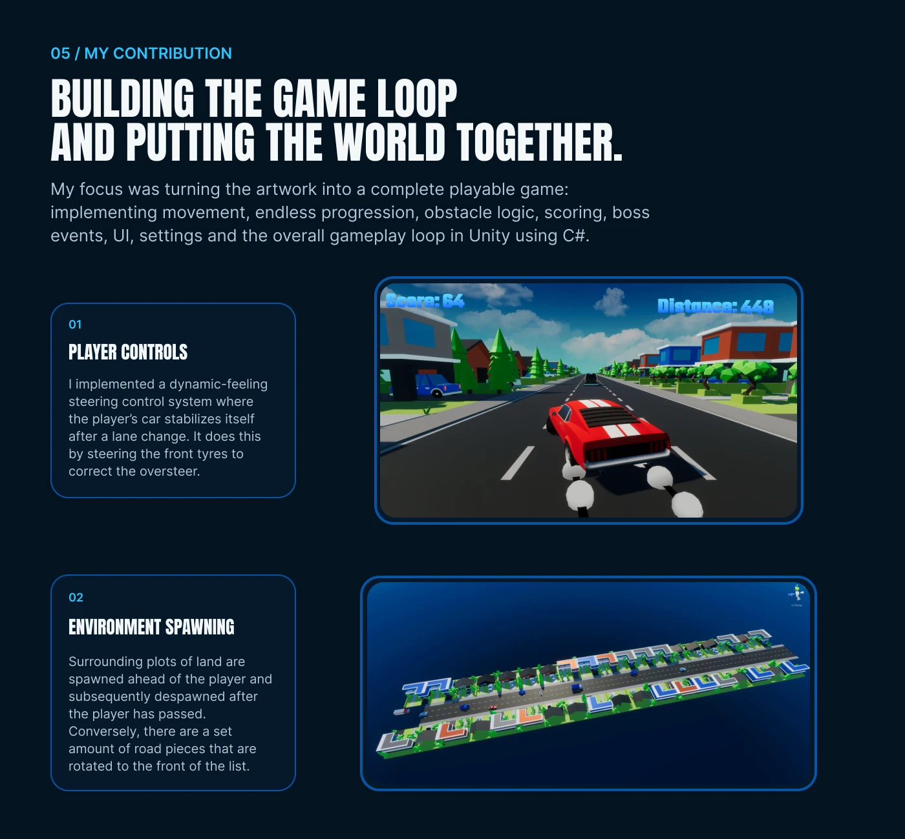
Player controls & world spawning
05 / MY CONTRIBUTION BUILDING THE GAME LOOP AND PUTTING THE WORLD TOGETHER. My focus was turning the artwork into a complete playable game: implementing movement, endless progression, obstacle logic, scoring, boss events, UI, settings and the overall gameplay loop in Unity using C#. 01 PLAYER CONTROLS I implemented a dynamic-feeling steering control system where the player’s car stabilizes itself after a lane change. It does this by steering the front tyres to correct the oversteer. 02 ENVIRONMENT SPAWNING Surrounding plots of land are spawned ahead of the player and subsequently despawned after the player has passed. Conversely, there are a set amount of road pieces that are rotated to the front of the list.
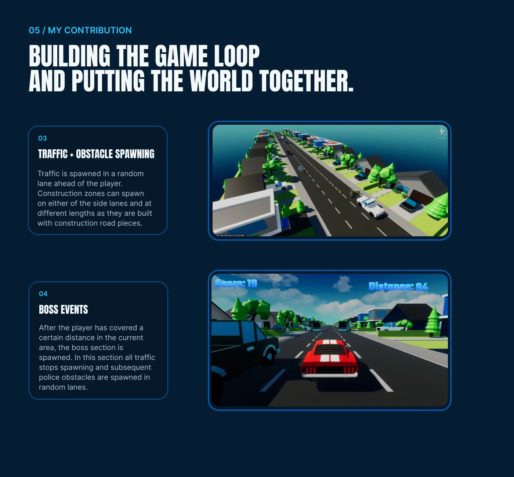
Traffic & boss systems
05 / MY CONTRIBUTION BUILDING THE GAME LOOP AND PUTTING THE WORLD TOGETHER. 03 TRAFFIC + OBSTACLE SPAWNING Traffic is spawned in a random lane ahead of the player. Construction zones can spawn on either of the side lanes and at different lengths as they are built with construction road pieces. 04 BOSS EVENTS After the player has covered a certain distance in the current area, the boss section is spawned. In this section all traffic stops spawning and subsequent police obstacles are spawned in random lanes.
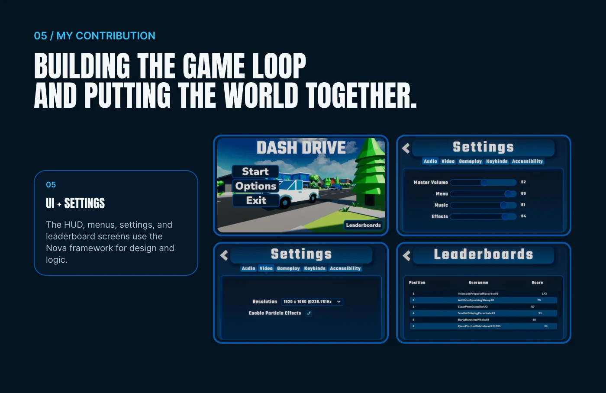
UI & settings
05 / MY CONTRIBUTION BUILDING THE GAME LOOP AND PUTTING THE WORLD TOGETHER. 05 UI + SETTINGS The HUD, menus, settings, and leaderboard screens use the Nova framework for design and logic.
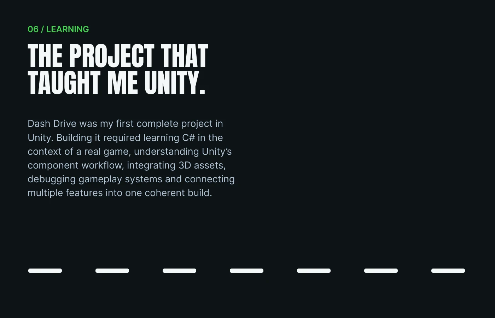
Learning Unity
06 / LEARNING THE PROJECT THAT TAUGHT ME UNITY. Dash Drive was my first complete project in Unity. Building it required learning C# in the context of a real game, understanding Unity’s component workflow, integrating 3D assets, debugging gameplay systems and connecting multiple features into one coherent build.
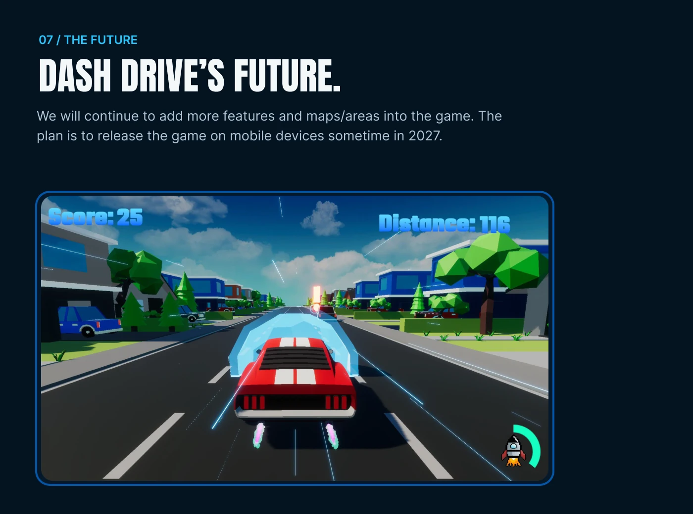
The future
07 / THE FUTURE DASH DRIVE’S FUTURE. We will continue to add more features and maps/areas into the game. The plan is to release the game on mobile devices sometime in 2027.
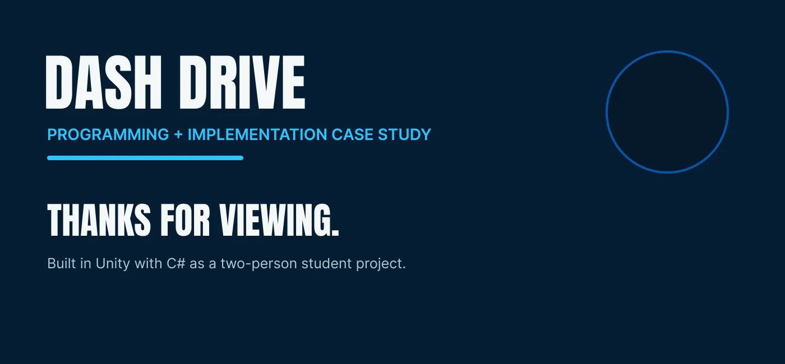
Thanks for viewing
DASH DRIVE PROGRAMMING + IMPLEMENTATION CASE STUDY THANKS FOR VIEWING. Built in Unity with C# as a two-person student project.
KEEP EXPLORING
Another world.
Another challenge.
Take a look behind the scenes of my next project.
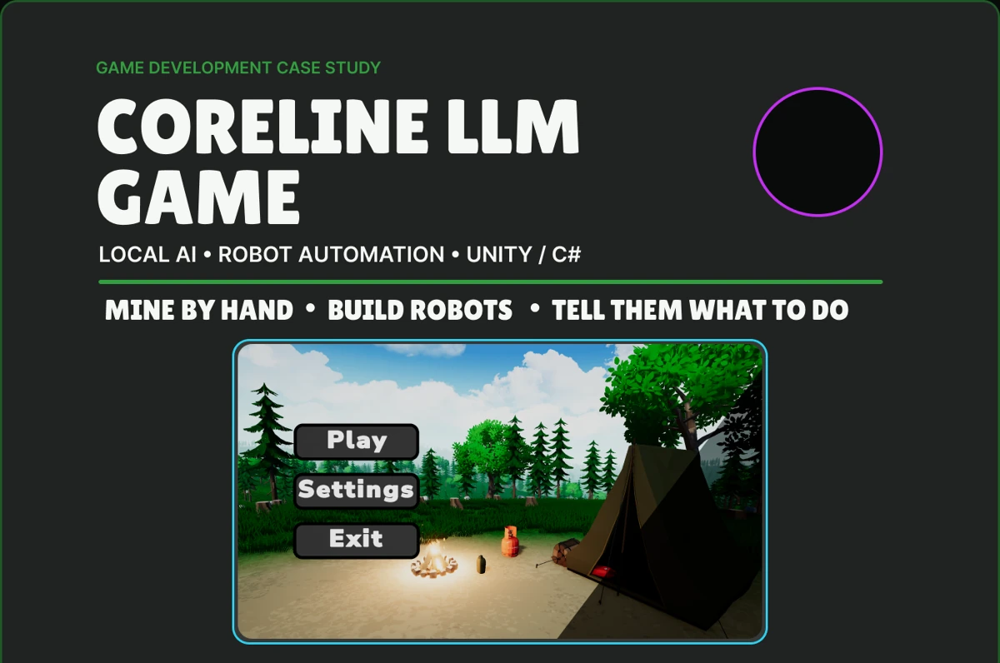
NEXT PROJECTCoreline